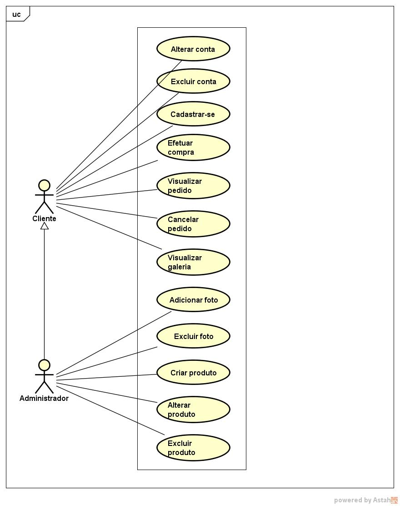

Documento de Requisitos de Sistema
Projeto feira agroecológica
A feirinha agroecológica é uma feira que acontece todos os sábados na Avenida Coronel José Bezerra, em frente ao banco do brasil, município de Currais Novos-RN. Como a população da cidade ainda não tem conhecimento vasto em relação a essa feirinha, o intuito é popularizar e aumentar a venda e o consumo de produtos agroecológicos no município. Então o projeto de um site exclusivamente para a feirinha tem como objetivo alcançar novos públicos para os comerciantes agroecológicas. Com um site para compra de produtos, os consumidores teriam acesso a não apenas os produtos comercializados, mas também a tudo relacionado a história desse comércio e dos seus produtores e vendedores.
Assim, o projeto do site da feirinha agroecológica tanto ajudaria os vendedores e produtores que tem como esse comercio uma forma de ajudar na renda mensal, como os consumidores, que se beneficiaram dos produtos de qualidade presentes na mesma. Além disso, ajudando a divulgar a história dos produtores rurais da cidade de currais novos, já que é um assunto desconhecido para muitos residentes da cidade.
Requisitos funcionais
- Escolher produto
- O cliente selecionaria os produtos e as quantidades que ele desejaria.
- Solicitar pedido
- O cliente vai enviar os produtos que foram escolhidos.
- Visualizar pedido
- O cliente vai conseguir visualizar os produtos que compõe seu pedido.
- Excluir pedido
- O cliente vai conseguir excluir o pedido até certo prazo.
- Alterar contato
- O administrador pode alterar os contatos presentes no sistema.
- Adicionar fotos
- O administrador pode adicionar novas fotos a galeria do sistema.
- Excluir fotos
- O administrador pode excluir novas fotos a galeria do sistema.
- Alterar fotos
- O cliente pode criar uma conta no sistema
- Criar cliente
- O cliente pode excluir sua conta presente no sistema.
- Excluir cliente
- O cliente pode excluir sua conta presente no sistema.
- Alterar cliente
- O cliente consegue alterar algumas informações pertencentes a sua conta.
- Criar produto
- O administrador pode cadastrar um produto no sistema
- Excluir produto
- O administrador pode excluir um produto no sistema
- Alterar produto
- O administrador consegue alterar algumas informações pertencentes a um produto.
Requisitos não funcionais
- Flexibilidade
- O site deve estar sempre disponível para ser acessado em qualquer lugar, de qualquer aparelho e sistema operacional
- Estoque funcional
- Ter o estoque de produtos sempre atualizado
- Disponibilidade
- Estar disponível 24 horas por dia
- Leveza
- Ter baixo consumo de recursos da máquina do cliente
Sistema

Casos de uso
- Efetuar compra
- Visualizar pedido
- Cancelar pedido
- Visualizar galeria
- Adicionar foto
- Excluir foto
- Cadastrar
- Excluir conta
- Alterar informações de conta
- Criar produto
- Alterar produto
- Excluir produtos
- Alterar contato